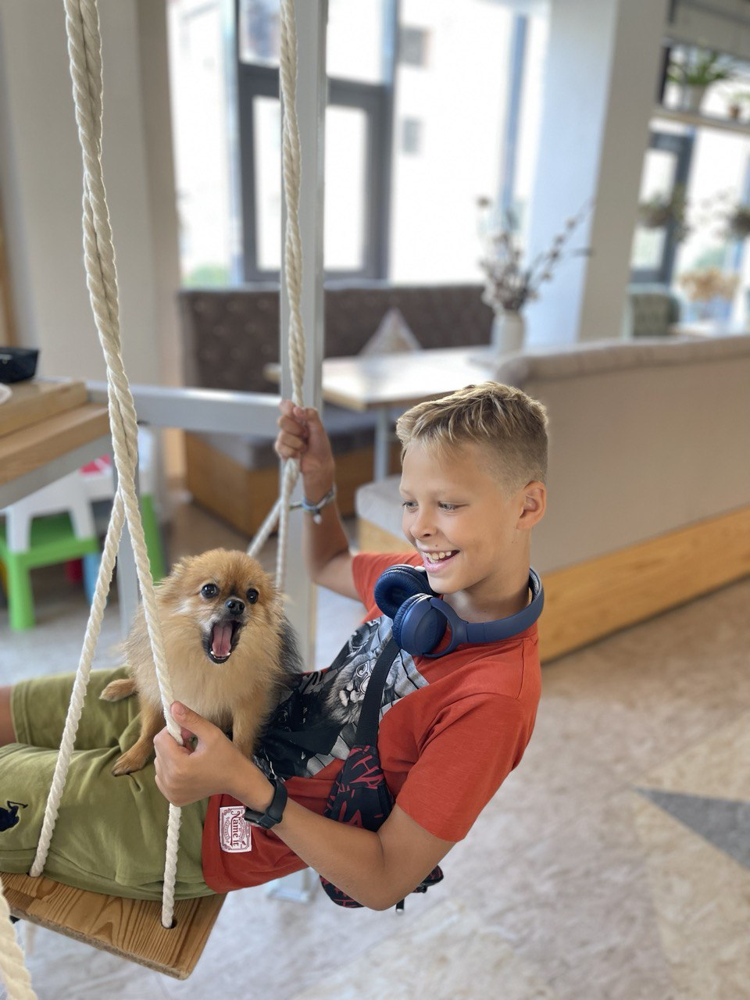

.jpg)
Мої інтереси
Фортепіано
Я дуже люблю грати на фортепіано. Я почав у 6 років, але після повномаштабного вторгнення росії🤢🤮 в Україну, я перестав грати аж на півтора роки, але три місяці тому, я згадав як мені подобалося грати на піаніно і почав знову 😁
\Читання
Ще, я дуже люблю читати. Моя бабуся - вчитель, вона мене навчила читати коли мені було всього три роки. Моя швидкість читання слів в хвилину - приблизно 2000 слів за хвилину.
А якщо честно, то більше 450 слів за хвилину, або ж близько 2300 букв за такий же час.
Мої улюблени додаткові заняття
Футбол
Перший раз я зіграв у футбол у віці 2 років, а почав займатися професійно коли мені було 6-7 років. Це - мій один з найулюбленишів видів спорту.
Паркур
Паркур - це спортивна діяльність, яка полягає в швидкому та ефективному пересуванні через перешкоди у міському середовищі. Головна мета паркуру - пройти відстань з одного пункту до іншого, переборюючи будь-які перешкоди з використанням різних технік. Паркур сприяє розвитку сили, гнучкості, координації та реакції, а також виховує віру у власні можливості. Я завжди хотів займатися паркуром, але вперше спробував тільки коли приїхав в Британію, півтора роки тому.
Танці
Почав займатися танцями дуже давно, навіть брав участь у конкурсі!
Подивитися конкурс тутТеатральне мистетцтво
Перший раз прийшов на театральне мистецтво ще в 5 років. Не хотів, але потім - полюбив! Займався 5 з половиную років, багато виступав, мав головні ролі і навіть брали інтерв`ю!
Вокал
Почав займатися вокалом не так давно, але вже навіть виступав на концерті!
Програмування
В мене завжди була якась пристрасть то комп`ютерів, а коли отримав свій, то мені зразу захотілось займатись програмуванням, я хотив на декілька курсів, але не зразу знайшов GoIteens яким зараз і займаюся.
Мої улюблені уроки в школі
Математика
Коли я був маленький, я почав займатися "Соробан" - ментальною математикою, закінчив курс одним із накращіх і тепер можу рахувати ВЕЛИЧЕЗНІІІ числа в голові.
Фізкультура
Я дуже люблю спорт, як ви і зрозуміли з написаного вище
Інформатика
Тут все зрозуміло: Комп`ютер = Інформатика = GoIteens
Англійська мова
Мені завжди іноземні мови давалися легко, а особливо - англійська мова
А ще, в мене є собака на Ім`я Барні
-

- 